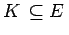
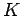
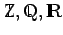
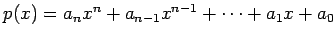
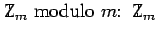
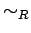

Inhalt Index DeskTop Bronstein

 Algebra und Diskrete Mathematik Klassische algebraische Strukturen Ringe und Körper Definitionen von Ringen und Körpern
Algebra und Diskrete Mathematik Klassische algebraische Strukturen Ringe und Körper Definitionen von Ringen und Körpern


Es seien K und E Körper. Gilt , so heißt E Körpererweiterung über .
| Beispiel A |
|
Die Zahlenbereiche  und |
| Beispiel B |
|
Die Menge Mn aller Matrizen vom Typ (n,n) über den reellen (oder komplexen) Zahlen bildet einen nichtkommutativen Ring mit der Einheitsmatrix als Einselement. |
| Beispiel C |
|
Die Menge der reellen Polynome  bildet bezüglich der üblichen Addition und Multiplikation von Polynomen einen Ring, den Polynomring R[x]. n heißt Grad des Polynoms p(x). Er wird mit degp(x) bezeichnet. Allgemeiner kann man anstelle des Polynomringes über |
| Beispiel D | ||
|
Beispiele für endliche Ringe sind die Restklassenringe  besteht aus allen Klassen [a]m von ganzen Zahlen, die bei der Division durch m den gleichen Rest lassen. Mit [a]m wird die durch die ganze Zahl a bestimmte Äquivalenzklasse bezüglich der Relation  bezeichnet. Dabei sind durch
Ringoperationen |